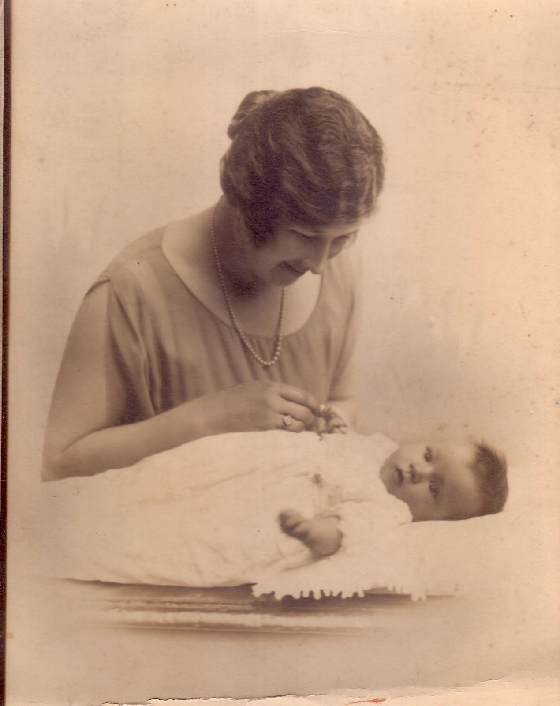
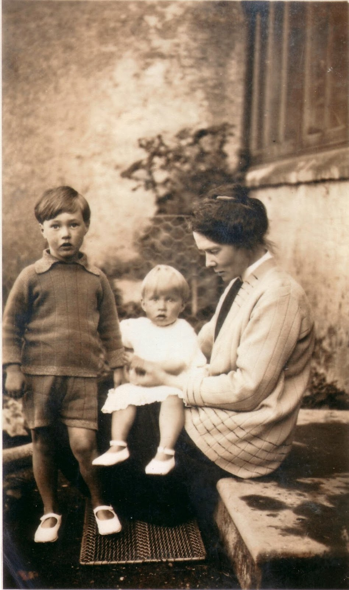
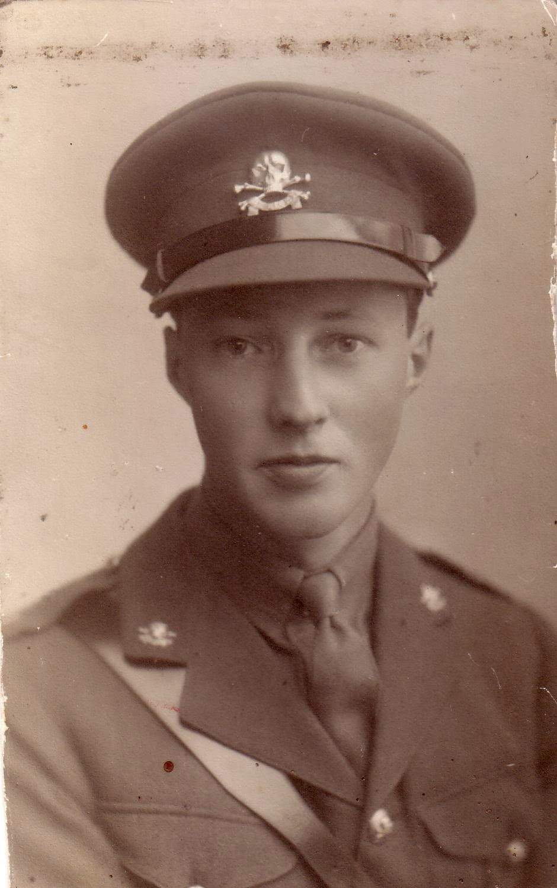
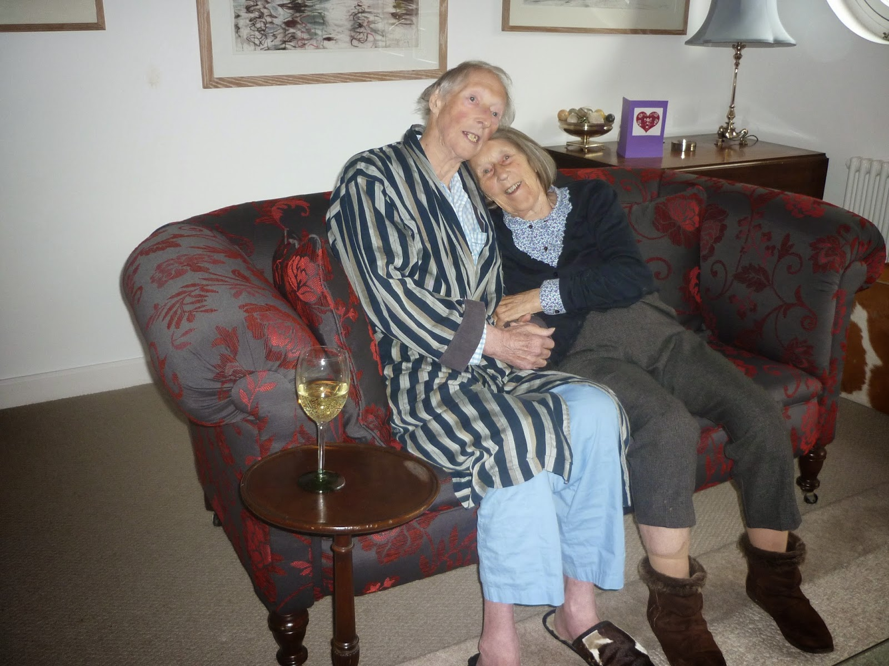

 |
| Rivers was his mother's first child |
{kind=link}
 |
| Rivers and June with their nanny |
{kind=link}
My uncle, Rivers Scott, was his mother's first
child and his father's third. Not all WW1 wives had been content to stay
bravely at home awaiting their husband's return from the front and my
grandfather's first wife had left their two small sons and decamped. The second wife, my grandmother, had been nursing in the war. She welcomed the two older boys
and gave birth to four children of her own: boy-girl, boy-girl.
Rivers (Bill to his family) and my mother, June, were the first two
of the second batch and enjoyed a notably secure and happy childhood.
They had ponies and skiing holidays, private theatricals and big
summer camps when multitudes of cousins came to stay. My grandfather
had been child number twelve in a middle-class family of thirteen and
had become a successful stockbroker. There was a nanny and a cook, a
butler, chauffeur, housemaid, grooms and gardeners. (I find this oddly embarrassing
to write.) When they were small Rivers and June were mainly looked
after by their nanny and, although my mother remembers their pre-war
life as idyllic, it also seems clear that she resented this. The nanny
didn't really like her, she believed, her parents had no time: she
was better off in the kitchen getting in the way of the cook. She lavished her affection on her older brother and was cherished by him in return.
Rivers was soon off to prep school
where he was initially unhappy. He told his nanny and she told his
mother. When his mother called him to her and asked him about his
difficulties he denied them completely, “I didn't want her to think
that I was wet.” He went to Eton where again he found it hard to
settle, though this time he told no one. He was a good skier but avoided involvement with the energetic polo-playing
ethos of his father and older brother. I think he might have been
scared of horses – he had a hard-mouthed pony which regularly ran
away with him – but it would have been 'wet' to say so. Cleverly he
took up photography and became a welcome spectator at the
polo-matches as he took reels of 16mm film which his father's friends
could replay later to watch themselves in action.
{kind=link}

He went up to Trinity College Cambridge to read history with the intention of eventually becoming a lawyer. He was rational, intelligent, articulate. I think he would have been a good one. But this was January 1940 and he was just 19. Twelve months later Rivers dragged himself away from Cambridge and joined the Army, via six months at Sandhurst. Looking at his photo my heart goes out to him. “I was a hopeless officer,” he said. “I was immature and wet.” That word again. He was given command of a tank and eventually found himself in Tunisia at the Battle of the Kasserine Pass. Wet or not he displayed unexpected strength and courage rescuing the gunner from their burning tank before being captured and transported to Italy as a prisoner of war.
Rivers was a gentle, courteous,
self-effacing man whose default position was to see the best in
people. He knew that the camp commandant was pro-British and unhappy
with his role as gaoler nevertheless he took his turn with his fellow
POWs digging tunnels and attempting to escape. He also set himself to
improve his French and learn Italian. Actual escape came in the
autumn of 1943 when Mussolini fell and the commandant opened the
gates of his camp and told the 600 British officers to leave as
quickly as they could. German troops arrived days later and he was
shot for this decision.
The Italian people were painfully
divided. Some – mainly the rural peasants – risked their lives
and the lives of their families to shelter former prisoners: others
were ready to hand them in. Rivers and a friend headed north, hoping
to reach Switzerland. It was three months of fear and effort and
reliance on the kindness of strangers – and profound, humbling
gratitude for their bravery – before they successfully crossed the
Alps. They were immediately interned and several more months dragged
by before the Swiss opened their border with France and Rivers found
his newly acquired language skills helping a monoglot Australian
Colonel organise homeward passage for all the former prisoners of
war.
The pre-war life had gone for ever –
as it had for most of Rivers's generation. His father had suffered a
disabling stroke, the house had been sold and the household
scattered. His youngest sister had committed suicide. The Army sent him back to Italy as ADC to General Morgan, one of his father's former polo-playing chums, who received the formal surrender of the Axis forces in May 1945. By the time Rivers was
finally demobbed he felt too old to return to Cambridge. Instead he
spent a year in Paris, perfecting his French, going to any number of
lectures and shocking his mother by embarking on a glorious affaire
with a divorced Frenchwoman -- la Belle Helene, my mother called her
The year was over, the relationship ended
and Rivers was still unsure what to do with his life. In the
advertisement columns of the Spectator he noticed a magazine
for sale, the Young Briton. It would cost £900. He borrowed
the money, wrote most of the content himself (with an occasional
contribution from his sister, my mother) turned it into a bilingual
magazine, and marketed it to schools. His father died, his mother and
younger brother moved to live in London. A neighbour offered him some freelance
work on the Times Educational Supplement. Soon he had sold
the Young Briton and was working full time for the TES in Printing House Square. Then another friend recommended him to the Daily Telegraph 'Peterborough' column. “I was
a hopeless gossip columnist” he always said and I believed him.
Although he had a great fund of anecdotes they were almost always
kind and somehow discreet as well. He was soon shunted off onto the
Telegraph arts pages and when the Sunday Telegraph was
established as a separate newspaper in 1961 he became its literary editor
and stayed there twenty years. “This was the sort of journalism I
found that I could do.”
Meanwhile my mother's life and his had
split apart. June was only 15 in 1939 but after the disintegration of
their family she had had left school and spent most of the war living
and working in London, first in a factory making gun-sights and then
as an extremely junior clerk in the Foreign Office. She was there on
her own though the later periods of bombing and has always seemed to
me to be much more
obviously traumatised by the experience of war. Eventually she
discovered sailing, then met and married my father, George. George
was the son of a Suffolk farmer who had died in an accident during
the East Anglian agricultural depression. He'd left school at 14 to
work in Woolworths for 25/- per week, then had served in the RNVR,
mainly in administrative roles in Canada and West Africa. He and
Rivers liked one another but found little in common, especially after Rivers converted to
Catholicism. This was a profound and sustaining decision for him but
I know my mother felt alienated by it – especially when her mother and younger brother also converted. Rivers wife, Christina,
was the daughter of an eminent Catholic historian, her sister was a
nun. There was no great spirit of ecumenicalism in the 1950s.
{kind=link}
The
bonds of childhood ran deep however: Mum never ceased to admire her
older brother and he maintained his cherishing attitude towards her.
If I've ever been worried about her happiness I've always been able
to discuss this with him, knowing that I could rely on his good sense
and understanding. That's what one wants in an uncle. On a purely
personal note I remember one occasion in the later 1960s when she
took me, a teenager, to meet him
in a dark and smoky Fleet Street pub when he was working at the
Sunday
Telegraph.
They talked, I gawked and when I stepped out, blinking, onto the
pavement I had only one thought in my head. "You can make a
living being paid to read books?"
I
would have been amazed had I known that Rivers himself had never
intended this to happen,. In a recent interview, he described his
career as being "a matter of pure chance." "I fell
into jobs, I was offered jobs and I took them." After twenty
years at the Telegraph
he moved to become non-fiction editor at Hodder and Stoughton. “Oh,
Rivers, you're so restless,” said a friend. Three years later he
allowed himself to be persuaded back in to journalism as literary
editor for Sir James' Goldsmith's Now!
This was a mistake. Subsequently he failed to settle as the literary
editor of the Mail
on Sunday,
then developed a new and satisfying career, from 1981, as a literary
agent in partnership with Gloria Ferris. I was a bookseller then but
when I formed the tentative idea of writing a biography of the
detective novelist, Margery Allingham, I discovered just how good an
editor he was. He had the great gift of helping one to say what one
meant, clearly and without pretension.
 |
| Rivers and June, a week before he died. |
On
the day you're most likely to read this I shall be at his funeral.
Rivers's wife, Christina, died many years ago but their five sons
will be there, a varied, talented, interesting bunch. After 90 years
my mother will be bereft. His partner Gloria who gave him unstinting
love, support and companionship in the latter part of his life will
also be saying goodbye. And out there in the homes and libraries of
the reading public are those thousands of books
which
he eased into the world, either by his shrewd choice of reviewer, his careful negotiation with publishers or, above all, by his own
lucid, unobtrusive editorial skill.
{kind=link}